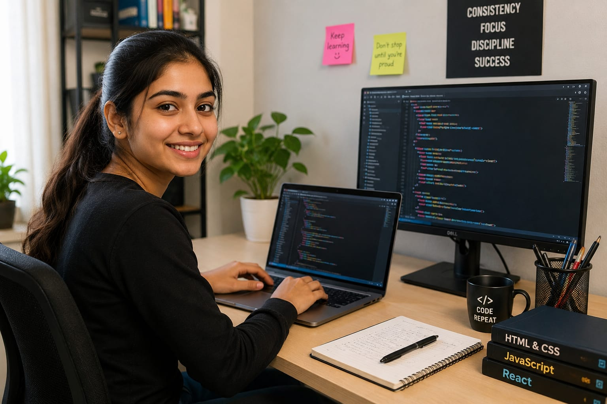

- If you open any website or mobile app, You can see buttons, images, menu, colors, and animations on the screen.
- What the user sees is the ""Frontend" of the app or website.
- The person who builds this is called a Frontend Developer.
- 👉 In simple words: Frontend Developers create the visual part of websites and apps that users interact with.
Frontend Developer
🧑🎨 What Do They Do?

🎓 How to Become a Frontend Developer
These beginner-level computer courses help students learn website design, user interface construction, responsive web development, and client-side programming skills.
Diploma in Computer Science & Engineering (CSE)
Duration: 3 Years
Eligibility: Class 10 Pass
Entrance Exam: Polytechnic Entrance Exam / Merit-Based Admission
Diploma in Software Development
Duration: 1 – 2 Years
Eligibility: Class 10 Pass
Entrance Exam: Direct Admission / Institute-Level Test
📝 Exam Details
(Click on the exam name to see full details)
Polytechnic Entrance Exam Merit-Based Admission Direct Admission Institute Entrance TestNote: Many Frontend developers improve their skills by building websites, practicing coding, and creating design projects regularly.
These courses help students learn application development, advanced Javascript frameworks, responsive web design, and interactive UI development.
Bachelor of Computer Applications (BCA)
Duration: 3 Years
Eligibility: 10+2 Pass (Any Stream; Mathematics or Computer Science preferred)
Entrance Exam: CUET-UG / State-Level CET / University Merit
B.Tech in Computer Science / Information Technology
Duration: 4 Years
Eligibility: 10+2 Pass (with Physics, Chemistry, and Mathematics)
Entrance Exam: JEE Main / State Engineering Entrance Exams
BSc Computer Science
Duration: 3 Years
Eligibility: 10+2 Pass (Mathematics preferred)
Entrance Exam: CUET-UG / Merit-Based Admission
Bachelor in Software Development / Web Technology
Duration: 3 – 4 Years
Eligibility: 10+2 Pass
Entrance Exam: University Entrance Test / Direct Admission
📝 Exam Details
(Click on the exam name to see full details)
CUET-UG JEE Main State Engineering Entrance Exams State Level CET University Entrance Exam Merit-Based Admission Direct AdmissionNote: Frontend developers improve their skills by creating websites, practicing UI design, and building real-world projects regularly.
Diploma holders can directly enter the 2nd year of degree programs and complete graduation faster.
B.Tech Lateral Entry (CSE / IT)
Duration: 3 Years
Eligibility: Diploma in Computer Science / IT or Related Field
Entrance Exam: State Lateral Entry Entrance Exams
Note: Diploma students can improve their frontend development skills through UI projects, coding practice, and responsive website design.
These advanced courses help students specialize in frontend engineering, modern Javascript frameworks, UI architecture, and large-scale web application development.
Master of Computer Applications (MCA)
Duration: 2 Years
Eligibility: Graduate (BCA, BSc CS, or any degree with Mathematics)
Entrance Exam: NIMCET / State-Level MCA Entrance Exams
M.Tech in Computer Science / Software Engineering
Duration: 2 Years
Eligibility: B.Tech / BE / MCA or Related Degree
Entrance Exam: GATE / University Entrance Exam
📝 Exam Details
(Click on the exam name to see full details)
NIMCET GATE State MCA Entrance Exams University Entrance ExamNote: Graduates can strengthen their frontend development careers by building modern web apps, learning frameworks like React, and creating strong project portfolios.
- These certification programs help students learn frontend development, website design, HTML, CSS, Javascript and modern frontend tools.
- Some of the institutions offering certifications in frontend development are listed below.
Note:
(Age limits, marks, and admission process may vary depending on the college or state.
Below are some colleges that offer these courses.
These courses are available in many colleges and universities across India. You can choose colleges based on your location, budget, and entrance exams.)
🏛️ Colleges offering these courses in India
(Tap on a college to view the details)
After Class 10
Lovely Professional Unjversity, Punjab National Institute of Electronics & Information Technology (NIELT), Punjab Brainware University, West Bengal KMCT Institute of Emerging Technology and Management, Kozhikode, Kerala Indian School of Ethical Hacking, Kolkata Mangalayatan University, UPAfter Class 12
Chandigarh University, Punjab IGNOU, New Delhi Indian Institute of Technology (IIT) Madras, Chennai Indian Institute of Technology (IIT) Bombay, Mumbai SRM Institute of Science & Technology (SRMIST), Chennai REVA University, Bengaluru Lovely Professional University, Punjab Alliance University, Bengaluru Tata Institute of Social Sciences (TISS), MumbaiAfter Diploma
Manipal Institute of Technology (MAHE), Manipal, Karnataka Cochin University of Science & Technology (CUSAT), Kochi, KeralaSTEP 1
Imagine you are working as a Frontend Developer.
STEP 2
A company asks you to design a new website page.
STEP 3
You create buttons, menus, colors, and layouts using code.(computer language)
STEP 4
You make sure the website works properly on phones and computers.
STEP 5
People enjoy using the website because it looks clean and easy.
STEP 6
If you enjoy creativity, coding, and designing websites, this career may suit you.
Where do Frontend Developers work? (Job Roles + Growth)
Frontend Developers work in : Software and technology companies, Web and app development companies, IT services companies, e-commerce companies, Fintech companies, Startups, Digital agencies, Cloud and software product companies, and as Freelance developers.
🟢 Beginner Roles
Junior Frontend Developer
(After Short-Term Course / Diploma)
Builds basic website layouts and fixes simple visual issues.
Frontend Intern
(After Certificate / Diploma / BCA)
Tests website pages and learns frontend coding tools.
UI Developer
(After Diploma / Graduation)
Creates buttons, menus, forms, and interactive page designs.
Responsive Web Designer
(After Online Course / Graduation)
Designs websites that work smoothly on phones and computers.
🔵 Mid-Level Roles
Frontend Engineer
(After BCA / B.Tech / BSc CS + Experience)
Builds interactive web applications using frontend frameworks.
UI / Web Developer
(After Graduation + Experience)
Designs attractive interfaces and improves website performance.
React Developer
(After React Certification + Experience)
Creates dynamic web apps using React and JavaScript tools.
Frontend Performance Developer
(After Advanced Training + Experience)
Optimizes websites for speed, responsiveness, and smooth performance.
🟣 Advanced Roles
Frontend Architect
(After MCA / M.Tech + Experience)
Designs large frontend systems and manages complex UI structures.
UI/UX Engineering Lead
(After Postgraduate Program + Experience)
Guides frontend teams and improves user experience designs.
Technical Lead
(After Senior Development Experience)
Leads frontend development projects and manages coding teams.
International Software Companies
Frontend Developers build websites and web apps for global technology companies.
Global Web Development Agencies
Many agencies create websites and user interfaces for international clients.
Mobile & Web App Startups
Frontend Developers help startups design modern apps and interactive platforms.
Remote Frontend Development Jobs
Many companies hire frontend developers to work remotely from different countries.
Global E-Commerce Companies
Frontend teams create shopping websites and improve online customer experiences.
UI/UX Design & Product Companies
Frontend Developers work with designers to build attractive digital products.
(Click Yes or No for each question)
1. Do you notice the buttons and icons in websites or apps when you use them?
2. Have you ever wondered how websites or apps are created?
3. Have you ever thought about creating your own website or app?
4. Imagine you are working as a frontend developer. A company has a website that looks good on a computer but does not look right on a mobile phone. You check the frontend of the website, make changes to the pages, and make sure everything looks good. Now it works properly on both computers and phones. Would you be interested in doing this type of work?
5. Imagine a company ask you to design the frontend of their website.You create pages, buttons, menu, and layouts that customers see and use. You test the website and make sure it looks good and works properly. Does this excites you?